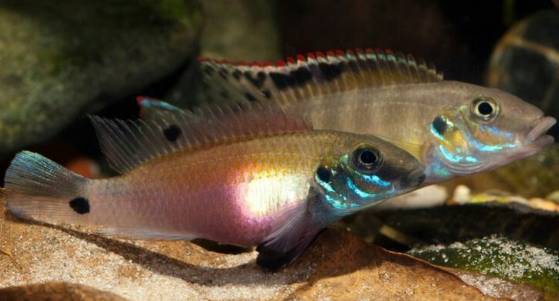

Systématique
- Ordre : Cichliformes
- Famille : Cichlidae
- Genre : Pelvicachromis
- Espèce : P. signatus
- Auteur : Lamboj, 2013

Pelvicachromis signatus est une espèce relativement récente, décrite par l'ichtyologue Anton Lamboj en 2013. Ce cichlidé nain appartient au groupe "humilis" et se distingue par ses motifs caractéristiques. Le nom signatus (signé/marqué) fait référence aux marques noires très distinctes présentes dans la nageoire dorsale des femelles.
Le mâle atteint environ 9 à 10 cm de longueur totale, tandis que la femelle reste plus petite, autour de 7 cm. Le corps est plus allongé que celui du P. pulcher classique. Le patron de coloration se compose de plusieurs barres verticales sombres sur les flancs (souvent 7 à 8). Chez les mâles, les nageoires impaires sont souvent bordées de rouge ou de jaune avec des reflets bleutés, tandis que les femelles présentent un abdomen rose à rouge violacé lors de la reproduction.
C'est un poisson territorial mais paisible, à condition que le volume du bac soit suffisant. Pelvicachromis signatus vit en couple et occupe principalement la zone inférieure de l'aquarium. Il est plus timide que d'autres membres du genre et nécessite un environnement calme.
En aquarium, il est essentiel de fournir de nombreuses cachettes (racines, noix de coco, amas de pierres) pour que les poissons se sentent en sécurité. Le substrat doit être du sable fin, car ils aiment le déplacer pour préparer leur nid. Bien qu'il puisse vivre en bac communautaire avec des characidés africains ou des petits poissons de surface, il défendra vigoureusement son périmètre lors de la garde des alevins.
Mode : Ovipare, pondeur sur substrat caché (cavitole).
La reproduction suit le schéma classique du genre mais demande des paramètres d'eau plus stricts pour réussir. La femelle parade devant le mâle en courbant son corps pour montrer son abdomen coloré. Les œufs sont déposés sur la paroi supérieure d'une grotte. La femelle assure l'entretien des œufs tandis que le mâle garde les environs.
Une particularité de cette espèce est le marquage ocellé sur la dorsale de la femelle qui semble servir de signal visuel pour les alevins ou le mâle. Après l'éclosion et la nage libre (environ 8 à 10 jours après la ponte), les deux parents conduisent les alevins à travers le bac. Les jeunes acceptent immédiatement les nauplies d'artémias et les micro-vers.
Dimorphisme sexuel : Très marqué. Le mâle est plus grand, possède des nageoires dorsale et anale se terminant en pointe effilée. La femelle est plus petite, plus ronde en période de frai, et possède des ocelles (taches noires) caractéristiques sur la nageoire dorsale, absentes chez le mâle.
Espérance de vie : 5 à 8 ans en aquarium.
Pelvicachromis signatus est originaire de la Guinée (Afrique de l'Ouest), plus précisément du bassin du fleuve Kolenté et du bassin du fleuve Konkouré. Il fréquente les cours d'eau de forêt et de savane.
L'eau y est généralement très douce, acide (pH 5.5 à 6.5) et limpide à légèrement ambrée. Le fond est jonché de sable, de feuilles mortes et de bois immergé, créant une multitude de micro-habitats. Contrairement à certaines populations côtières, il ne se rencontre pas dans les eaux saumâtres.
Répartition

Origine naturelle :
- Afrique de l'Ouest : Guinée (Bassin de la Kolenté et du Konkouré).
- Localité type : Rivière Kolenté, Guinée.
Statut : Espèce peu commune dans le commerce, principalement maintenue par des spécialistes. Elle est sensible à la dégradation de son habitat forestier.
Paramètres de maintenance
Température : 24 à 27 °C.
pH : 5,5 à 6,8.
GH : 1 à 8 °dGH (Eau douce préférable).
Courant : Modéré à faible.
Volume conseillé : Minimum 100-120 L pour un couple en raison de la taille du mâle.
Régime alimentaire
Régime : Omnivore à tendance carnivore.
Il se nourrit de détritus, de petites larves d'insectes et de petits crustacés trouvés dans le sable et la vase.
En aquarium, il accepte les nourritures sèches (granulés tombants), mais les aliments congelés ou vivants (artémias, daphnies, vers de vase blancs) sont indispensables pour favoriser la coloration et la reproduction.